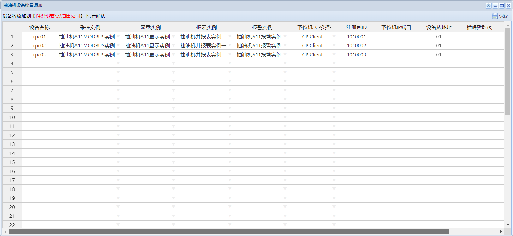

第1章 系统介绍
1.1 系统登录
访问地址：http://IP:端口/项目名称，如http://127.0.0.1/ap
默认管理员账号：admin
初始密码：123456
1.2 页面布局

1.3 页面操作
1、拖拽窗口或者点击界面中缝位置的图标或 可实现界面伸缩；
可实现界面伸缩；
2、点击饼图相应部分可对设备进行筛选；
3、用户角色拥有报表编辑权限，才可以修改报表内容；
4、历史曲线和报表曲线，每条曲线的纵坐标最大、最小值可配置。
1.4 OEM配置
先停止tomcat，配置完成后再启动
打开tomcat安装目录\webapps\ap\WEB-INF\classes\config\config.yml文件，修改oem部分，oem内容修改后，修改静态资源时间戳（首次部署不需要），无需清理浏览器缓存即可生效。

1.5 软件启停
1.5.1 手动启停
1、单井计算开发包ac
启动：
nohup /usr/local/ac -o file&
停止：
1）查看进程
ps –e

2）杀掉ac进程
kill -9 26630
2、协议通ad
启动：
nohup /usr/local/ad -o file&
停止：
1）查看进程
ps –e

2）杀掉ad进程
kill -9 22030
3、缓存数据库redis
启动：
nohup /opt/redis-7.0.9/src/redis-server /opt/redis-7.0.9/redis.conf&
停止：
/opt/redis-7.0.9/src/redis-cli shutdown
4、oracle数据库
启动：
1）启动oracle监听
su - oracle -lc "/opt/oracle/product/19c/dbhome_1/bin/lsnrctl start"
2）启动oracle服务
su - oracle -lc "/opt/oracle/product/19c/dbhome_1/bin/dbstart"
停止：
1）停止oracle监听
su - oracle -lc "/opt/oracle/product/19c/dbhome_1/bin/lsnrctl stop"
2）停止oracle服务
su - oracle -lc "/opt/oracle/product/19c/dbhome_1/bin/dbshut "
5、tomcat
启动：
/opt/apache-tomcat-9.0.73/bin/startup.sh
停止：
/opt/apache-tomcat-9.0.73/bin/shutdown.sh
1.5.2 开机启动
1、root用户修改/etc/rc.d/rc.local文件
su root
vim /etc/rc.d/rc.local
添加以下内容：
#启动oracle监听
su - oracle -lc "/opt/oracle/product/19c/dbhome_1/bin/lsnrctl start"
#启动oracle服务
su - oracle -lc "/opt/oracle/product/19c/dbhome_1/bin/dbstart"
#启动redis
nohup /opt/redis-7.0.9/src/redis-server /opt/redis-7.0.9/redis.conf > /dev/null 2>&1 &
#启动ac
nohup /usr/local/ac -o file > /dev/null 2>&1 &
#启动ad
nohup /usr/local/ad -o file > /dev/null 2>&1 &
#启动tomcat
/opt/apache-tomcat-9.0.73/bin/startup.sh
添加后保存退出
2、rc.local文件授权
chmod +x /etc/rc.d/rc.local
3、oracle额外配置
oracle开机启动，除了以上配置外，还需一些其他设置
1）root用户修改 /etc/oratab文件, 将N改为Y
su root
vim /etc/oratab
将N改成Y
orcl:/data1/opt/oracle/app/oracle/product/19/dbhome_1:N
2）oracle用户修改dbstart及dbshut文件
su - oracle
cd \$ORACLE_HOME/bin
vim dbstart
修改#ORACLE_HOME_LISTNER=\$为ORACLE_HOME_LISTNER=\$ORACLE_HOME
vim dbshut
修改#ORACLE_HOME_LISTNER=\$1为ORACLE_HOME_LISTNER=\$ORACLE_HOME
全部配置成功后，reboot重启服务器
su root
reboot
第2章 应用示例
2.1 驱动配置
包括协议配置、单元配置、实例配置。
2.1.1 添加协议
如A11协议
1、选中协议所属设备类型
2、点击添加协议按钮，输入协议名称及排序序号
3、选中协议，录入协议内容

名称：项名称；
起始地址：项起始地址，数组地址、modbus协议寄存器地址；
存储数据类型：设备中存储该项数据的数据类型，包括：bit、byte、int16（有符号16位整型）、uint16（无符号16位整型）、float32（32位浮点）、bcd（bcd码，时间一般配置为该类型）；
存储数据数量：存储数据类型的数量，如1个uint16，1个float32，24个bcd码；
读写类型：只读、只写或者读写；
响应模式：主动上传（设备主动上传）、被动响应（设备被动等待上位机读写）。
接口数据类型：上位机要解析成的数据类型(界面显示的数据)，包括bool（布尔型）、int（整型）、float32（32位浮点）、float64（64位浮点）、string（字符串），位数组和开关量接口数据类型固定选择bool型；
小数位数：保存数据小数位数；
换算比例：存储数据*换算比例=接口数据（解析数据时，存储数据解析后乘以换算比例，得到界面显示的接口数据；控制设备时，界面输入的控制值为接口数据，除以换算比例，为最终写入到设备中的存储数据）；
单位：上位机解析后的单位（和界面显示一致）；
解析模式：数据量、枚举量、开关量；
4、编辑项含义
枚举量：如运行状态值对应的含义配置

开关量：如保护开关位数组，位所对应的开关状态

数据量：如井口温度，将值-50设置为无效数据N/A

5、关联计算字段及运行状态配置
点击“存储字段表”按钮，查看根据协议自动生成的数据库字段表，相应项的内容存储到数据库表相应的字段中。
关联计算字段配置：特殊含义的字段，需要设置关联计算字段供系统识别。
运行状态配置：关联计算字段为运行状态的项，可以设定特定值（枚举量）或者范围（数据量）。

2.1.2 添加采控单元
在协议下面创建采控单元，每个采控单元下面可以创建一个采集组和一个控制组，并勾选采集组和控制组包含的项，以及配置哪些项需要进行日累计计算（如由有功功耗计算日用电量）。

2.1.3 添加显示单元
在协议下面创建显示单元，并设置单元下包含的项及曲线。

1、采集项、计算项和录入项
显示级别：采集项显示级别，用户只能查看显示级别小于自身数据显示级别的数据（见角色管理模块和用户管理模块，数字越大代表等级越小）；
实时字段顺序：对应实时监控模块中实时数据表和历史查询模块中详细数据表中项的显示顺序（左到右、上到下顺序），未设置顺序的项将放在最后面显示；
历史字段顺序：对应历史查询模块中历史数据表显示顺序，未设置顺序的项将放在最后面显示；
实时曲线：实时曲线显示顺序、颜色、样式等，未设置则不显示曲线，双击单元格进行配置；
历史曲线：历史曲线显示顺序、颜色、样式等，未设置则不显示曲线，双击单元格进行配置；

2、控制项
显示级别：采集项显示级别，用户只能查看显示级别小于自身数据显示级别的数据（见角色管理模块和用户管理模块，数字越大代表等级越小）；
字段顺序：对应实时监控模块中设备控制中的控制项显示顺序。
2.1.4 添加报警单元
1、在协议下面创建报警单元，并设置单元下包含的报警项及报警配置。

分别配置数据量、开关量、枚举量、工况诊断、运行状态、通信状态报警项，配置项如下：
上限：报警上限；
下限：报警下限；
回差：值大于上限和回差的和或者小于下限和回差的差值则报警；
延时：延时时间内不重复报警和推送；
报警级别：正常、一级报警、二级报警、三级报警（一级为最紧急严重）；
报警使能：使能或者失效（失效则一律不报警）；
是否发送短信：报警发生时是否向用户发送短信（建议一级报警项设为是，其他为否，避免频繁发送）；
是否发送邮件：报警发生时是否向用户发送邮件（建议一级报警项设为是，其他为否，避免频繁发送）；
触发状态：开关量数据生效，开或者关触发报警；
2、报警颜色配置
点击“报警颜色配置”按钮，对通信状态、运行状态以及各级别报警的颜色进行配置。

通信状态颜色：在线状态和离线状态报警颜色配置，生效范围：
1）实时监控模块：设备概览表中通信状态列；
2）实时监控模块：通信状态统计饼图颜色(在线、离线所设前景色)；
3）历史查询模块：设备列表和历史数据表中通信状态列；
4）历史查询模块：通信状态统计饼图颜色(在线、离线所设前景色)。
运行状态颜色：运行状态和停抽状态报警颜色配置，生效范围：
1）实时监控模块：设备概览表中运行状态列；
2）实时监控模块：运行状态统计饼图颜色(在线、离线所设前景色)；
3）历史查询模块：设备列表和历史数据表中运行状态列；
4）历史查询模块：运行状态统计饼图颜色(在线、离线所设前景色)。
报警等级颜色：数据报警等级颜色配置，生效范围：
1）实时监控模块：设备概览表和实时数据表中采集数据报警颜色；
2）历史查询模块：历史数据表和详细数据表中采集数据报警颜色。
2.1.5 添加报表单元
添加报表单元并分别配置单井报表中的班报表和日报表、区域报表中日报表的报表模板及报表内容、曲线。
1、单井报表/班报表配置：

点击“配置”，弹出报表内容配置窗口
统计方式：可选择最大值、最小值、平均值、最新值、最旧值、日累计值作为报表中显示的内容，为空则显示原始值；
显示级别：用户只能查看显示级别小于自身数据显示级别的数据（见角色管理模块和用户管理模块，数字越大代表等级越小）；
小数位数：报表中显示数据的小数位数；
报表曲线：配置报表曲线内容，双击单元格进行配置，未设置则不显示曲线。
2、单井报表/日报表配置：

点击“配置”，弹出报表内容配置窗口
统计方式：可选择最大值、最小值、平均值、最新值、最旧值、日累计值作为报表中显示的内容，为空则显示原始值；
显示级别：用户只能查看显示级别小于自身数据显示级别的数据（见角色管理模块和用户管理模块，数字越大代表等级越小）；
小数位数：报表中显示数据的小数位数；
报表曲线：配置报表曲线内容，双击单元格进行配置，未设置则不显示曲线。
3、区域报表/日报表配置：

点击“配置”，弹出报表内容配置窗口

统计方式：可选择最大值、最小值、平均值、最新值、最旧值、日累计值作为报表中显示的内容，为空则显示原始值；
显示级别：用户只能查看显示级别小于自身数据显示级别的数据（见角色管理模块和用户管理模块，数字越大代表等级越小）；
小数位数：报表中显示数据的小数位数；
求和：是否在报表中显示该项的和；
求平均：是否在报表中显示该项的平均值；
报表曲线：配置报表曲线内容，双击单元格进行配置，未设置则不显示曲线；
曲线统计类型：曲线数据是各设备该项数据的和还是平均值。
2.1.6 添加采控实例
在采控单元中配置完采控单元后（确定采控项和地址配置），还需配置采控实例（读写以及解析时具体的协议），实例和设备直接关联。
点击“添加实例”按钮，进行创建。

实例名称：实例名称；
采控单元：在下拉框中选择对应的采控单元；
采集协议类型：数据采集及解析具体协议，如modbus-tcp；
控制协议类型：设备控制具体协议，如modbus-tcp；
注册包前后缀16进制：注册包前后缀为十六进制还是ASC；
注册包前缀：注册包是设备上线时发送的信息，包含设备ID信息，如没有则不填写；
注册包后缀：如没有注册包则不填写；
注册包ID16进制：注册包内容为十六进制还是ASC；
心跳包前后缀16进制：心跳包前后缀为十六进制还是ASC；
心跳包前缀：心跳包用于判断设备连接状态，如没有则不填写；
心跳包后缀：如没有心跳包则不填写；
单包发送间隔(ms)：读取数据时，数据包发送间隔；
排序：实例排序序号，对应树形列表中实例显示顺序。
2.1.7 添加显示实例
在显示单元中配置完显示单元后，还需配置显示实例。
点击“添加实例”按钮，进行创建。

实例名称：实例名称；
显示单元：在下拉框中选择对应的显示单元；
排序：实例排序序号，对应树形列表中实例显示顺序。
2.1.8 添加报警实例
在报警单元中配置完报警单元后，还需配置报警实例。
点击“添加实例”按钮，进行创建。

实例名称：实例名称；
报警单元：在下拉框中选择对应的报警单元；
排序：实例排序序号，对应树形列表中实例显示顺序。
2.1.9 添加报表实例
在报表单元中配置完报表单元后，还需配置报表实例。
点击“添加实例”按钮，进行创建。

实例名称：实例名称；
报表单元：在下拉框中选择对应的报表单元；
排序：实例排序序号，对应树形列表中实例显示顺序。
2.1.10 删除操作
在相应的列表中选中要删除的项，右键→删除
2.2 设备管理
2.2.1 井名信息
按照2.1节中添加好驱动相关的数据后，在该模块添加设备。
2.2.1.1 添加设备
点击“添加设备”按钮，将在选中的单位下添加设备，如没有选中单位，则在第一个单位下添加，同一单位下不能添加同名设备。

井名：同一单位下不能添加同名设备；
采控实例：对应驱动配置/实例配置/采控实例中配置的实例；
显示实例：对应驱动配置/实例配置/显示实例中配置的实例；
报表实例：对应驱动配置/实例配置/报表实例中配置的实例；
报警实例：对应驱动配置/实例配置/报警实例中配置的实例；
下位机TCP类型：TCP Client或者TCP Server；
注册包ID：下位机TCP Client模式需配置；
下位机IP端口：下位机TCP Server模式需配置；
设备从地址：如01、02；
错峰延时：采集数据时延时采集时间，以免设备同时采集资源紧张；
状态：设为失效后，将不再采集该设备的数据；
排序编号：设备显示顺序；
2.2.1.2 设备查看及修改

1、在设备列表处进行设备主要信息查看和修改：
2、附加信息

3、辅件设备
勾选设备的辅件设备信息（辅件设备维护见2.2.2节），指定类型为抽油机的辅件设备，只能单选。

3、视频配置
需要首先录入视频密钥信息，具备视频密钥编辑权限的用户，点击“编辑视频密钥”按钮，维护密钥信息

3、计算数据配置
需要进行功图计算或者转速计产，配置计算所需的基础数据

特别说明：净毛比与净毛值
净毛比与净毛值用于标定产量，标定方式为：y=ax+b，a-净毛比 b-净毛值 x-标定前产量 y-标定后产量，净毛比默认为1，净毛值默认为0，则不进行标定。
抽油机详情：首先在辅件设备标签页配置抽油机型号，在此页面配置抽油机冲程及平衡块信息（仅功图计算需要）。
2.2.1.3 删除设备
在设备列表中选中删除的设备，点击“删除设备”按钮，进行删除操作。
2.2.1.4 批量添加
点击“批量添加”按钮，在所选单位下进行设备批量添加。在弹出的窗口中编辑添加的设备信息（可在excel中编辑好，粘贴到表格中），点击“保存”按钮进行保存。校验无问题的数据直接保存，有问题的数据返回并显示异常数据处理窗口，在窗口中进行数据修改二次保存，或者放弃。无异常数据直接保存成功。

保存后，如果有校验不通过的数据，会显示异常数据处理窗口。异常数据分为冲突数据(注册包ID、设备从地址和已有设备冲突)和已有数据（同一单位下已存在同名设备）。
冲突数据修改注册包ID和设备从地址，直到无冲突时才可保存成功。
已有数据继续保存的话，覆盖同名设备的信息，不会添加设备。

2.2.2 辅件设备

如果指定类型为抽油机，需录入抽油机一些特有参数。
第3章 其他配置
3.1 邮件发送账号配置
如需发送邮件（如报警邮件），参考本节内容配置邮件发送账号。
先停止tomcat，配置完成后再启动；
打开tomcat安装目录\webapps\ap\WEB-INF\classes\config\config.yml文件，配置邮箱信息

3.2 其他项配置
软件的一些其他配置，一般情况下不用修改.
先停止tomcat，配置完成后再启动。
打开tomcat安装目录\webapps\ap\WEB-INF\classes\config\config.yml文件，配置项见下图：

3.3 oracle常见问题
1、关闭oracle监听日志
随着系统的运行，oracle的日志文件会越来越大，当达到4G时，会影响到数据库的正常运行，可以选择关闭oracle日志文件的生成，操作方法如下。
打开命令窗口，依次执行以下命令进行关闭oracle日志操作，centOS系统下，切换oracle用户执行
su – oracle
1）lsnrctl
2）set log_status off
3）save_config
4）show log_status

2、关闭oracle审计功能
随着系统的运行，因AUD\$数据越来越大，导致SYSTEM表空间增大，当达到32G时会影响到数据库的正常运行，必须扩展SYSTEM表空间文件，可以选择关闭oracle审计功能，操作方法如下。
centOS系统下，先切换oracle用户
su – oracle
1）命令窗口执行sqlplus / as sysdba，连接数据库

2）执行“truncate table aud\$;”截断数据

3）执行“alter system set audit_trail=NONE scope=spfile;”修改spfile文件，关闭审计功能。

4）重启数据库：执行“shutdown immediate;”关闭oracle例程后，执行“startup”启动数据库。

3、oracle12以上版本插拔数据库自启动
每次重启数据库后，创建的插拔数据库默认不自动打开。可创建触发器，在服务启动后自动打开插拔数据库。
centOS系统下，先切换oracle用户
su – oracle
1）命令窗口执行sqlplus / as sysdba，连接数据库；
2）复制并执行以下触发器语句，注意：最后面的/不可忽略
CREATE OR REPLACE TRIGGER open_pdbs
AFTER STARTUP ON DATABASE
BEGIN
EXECUTE IMMEDIATE 'ALTER PLUGGABLE DATABASE ALL OPEN';
END open_pdbs;
/
4、表空间扩容
oracle的表空间与数据文件是成对出现的，每一个数据文件对应一个表空间，一个表空间可以包含多个数据文件。单个数据文件最大为32G，可以通过增加数据文件的方式来为表空间扩容：
alter tablespace 表空间名称 add datafile 数据文件 size 350M autoextend on next 50M Maxsize UNLIMITED;
如：
alter tablespace ap_data add datafile '/opt/oracle/oradata/ORCLCDB/ORCLPDB1/ap_data02.DBF' size 350M autoextend on next 50M Maxsize UNLIMITED;